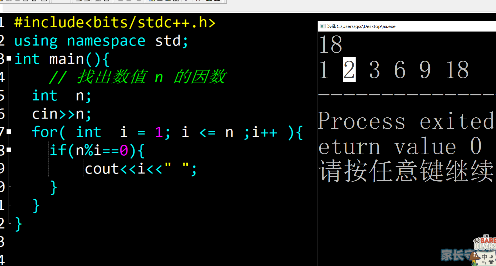
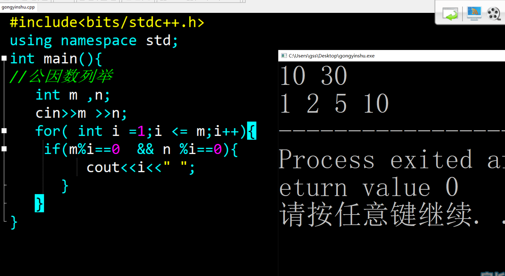
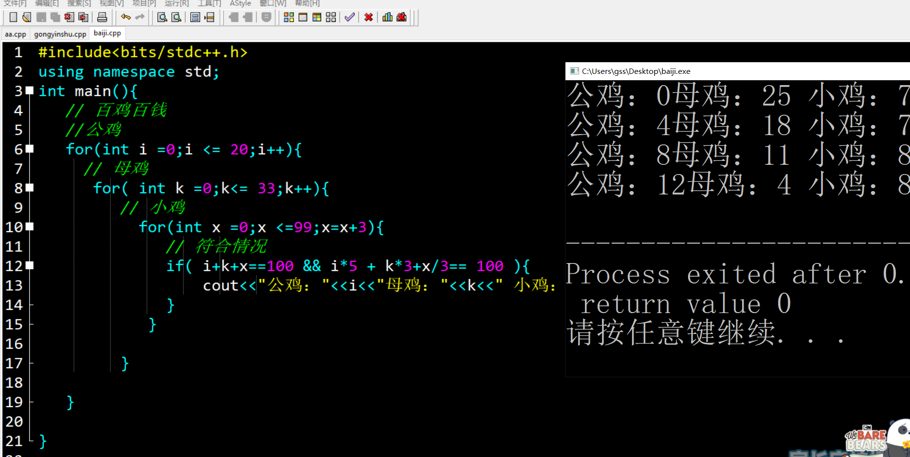
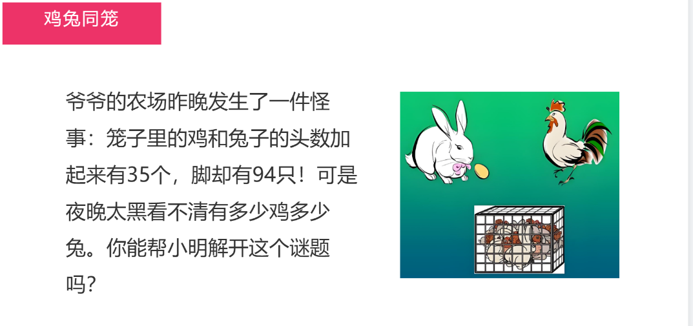
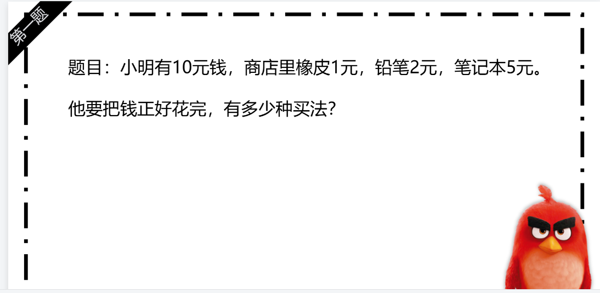
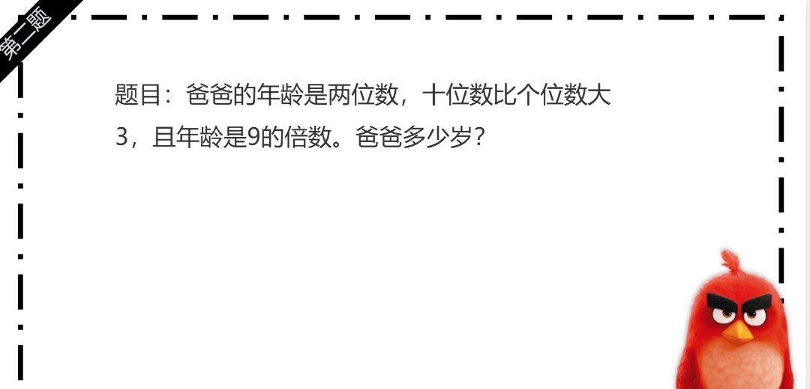

预科42课 枚举算法
知识点梳理内容
-
for循环语法：
格式：for (初始化; 循环条件; 更新条件) { 循环体; }
特点：将“初始化、判断、更新”整合在一行，适合已知循环次数的场景。 -
循环终止方式：
1. 条件不成立自动终止；
2. 使用break语句强制跳出循环（如找到目标值后停止）。
重点难点解析
-
循环条件的设计：
- 枚举算法（Enumeration Algorithm）是一种通过逐一列举所有可能的情况，并检查每一种情况是否满足问题的要求， 从而找出解或所有解的算法策略。它属于穷举法的一种，是最基础、最直观的算法思想之一。
- 特点： 1. 穷举性（全面性）
枚举算法会尝试所有可能的情况或组合，确保不会遗漏任何潜在的解。 优点：只要解存在于枚举范围内，就一定能找到。 缺点：如果解空间太大，效率会非常低。
2. 正确性高 因为枚举了所有可能性，只要判断条件写得正确，得到的解一定是正确的。 适合用于对准确性要求高、解空间相对较小的问题。
3. 实现简单直观 算法逻辑通常很容易理解和编写，特别适合初学者。 往往只需要使用循环、条件判断等基本控制结构即可实现。
4. 时间复杂度较高（效率问题） 当问题的解空间非常大时（比如排列组合、大范围数字等），枚举所有情况会导致算法运行时间过长，甚至不可行。 时间复杂度通常是 指数级或阶乘级，如 O(2ⁿ)、O(n!)，对于大规模数据不适用。
5. 空间复杂度通常较低 枚举算法一般只需要存储当前枚举的状态或临时变量，不需要保存大量中间数据，因此空间开销相对较小。
二、适用场景
枚举算法适用于以下类型的问题：
解空间较小，可以快速枚举所有可能情况。 需要找出所有可行解或特定解，如组合、排列问题。 问题本身没有明显的高效算法，或者作为暴力求解的起点。 作为其他优化算法的基础或对比方法，比如动态规划、贪心算法等的对照。
三、经典应用举例
百钱百鸡问题：用有限的钱买不同价格的鸡，求所有可能的购买组合。
查找数组中两个数之和等于目标值（暴力解法）。
四、优化方向
虽然枚举算法简单，但在面对较大问题时效率低下，因此常采用以下优化手段：
剪枝（Pruning）：在枚举过程中，提前排除不可能产生解的分支，减少计算量。
限制枚举范围：根据问题条件缩小可能的取值范围，避免无效枚举。
-
因数概念 ：
因数（Factor），也叫约数，是指能够整除某个整数的整数。
三、举例说明
例 1：求 12 的因数
我们找所有能整除 12 的正整数：
1 × 12 = 12 → 1 和 12 是因数
2 × 6 = 12 → 2 和 6 是因数
3 × 4 = 12 → 3 和 4 是因数
4 × 3 = 12（重复了，不用再记）
……
所以，12 的因数有：1, 2, 3, 4, 6, 12
✅ 总结：因数总是成对出现（除了完全平方数，比如 16 = 4×4，4 只算一次）
-
公因数：
一、什么是公因数？
公因数（Common Divisor） 是指能够同时整除两个或多个整数的整数。换句话说，如果一个数能同时整除两个数，那么这个数就是这两个数的公因数。
示例（求 12 和 18 的公因数）：
较小数是 12
依次判断 1 ~ 12：
1：12÷1=0, 18÷1=0 → 是公因数
2：12÷2=0, 18÷2=0 → 是
3：是
4：18÷4有余数 → 不是
5：都有余数 → 不是
6：是
7~12：都不能同时整除
公因数有：1, 2, 3, 6
配套练习
- 基础语法练习1 ：因数的列举
- 基础语法练习2 ：公因数的列举
- 综合练习3：用循环计算“1!+2!+3!+…+5!”（5的阶乘累加）
📸 参考代码与练习说明
【题目】输入一个整数，列举其所有的因数
【思路】 从数值1 到数值n ，n是i 的倍数
【关键代码】 for-if n%i==0
【说明】 多次倍数的判断

【题目】输入2个数值，找出其所有的因数，然后把他们共有的因数输出
【思路】 1. 输入整数m 和整数n ,列举其所有的因数
2. 循环体内直接输出i的值；
【关键代码】for- if m%i==0 && n%i==0；
【说明】 逻辑运算 &&

【题目】小明暑假去爷爷的农场帮忙，爷爷给了他100元去买100只鸡。市场上有三种鸡：公鸡：5元/只（会打鸣叫大家起床）母鸡：3元/只（会下蛋做早餐）小鸡：1元/3只（毛茸茸超可爱）小明要怎么买才能正好花完100元买到100只鸡呢？让我们帮小明算一算！
【思路】 1.一共100元，需求100只鸡 ， 公鸡5元一只，母鸡3元一只，小鸡1元3只
【关键代码】 符合条件 百鸡百钱
【说明】 无

作业练习
- 作业练习1 ：又遇鸡和兔
- 作业练习2：文具购买
- 作业练习3：爸爸的年龄”


